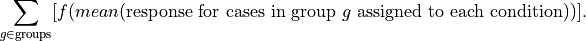
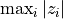
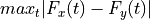

Stratified testing¶
Stratified permutation tests.
- permute.stratified.corrcoef(x, y, group)[source]¶
Calculates sum of Spearman correlations between x and y, computed separately in each group.
- Parameters
- xarray-like
Variable 1
- yarray-like
Variable 2, of the same length as x
- grouparray-like
Group memberships, of the same length as x
- Returns
- float
The sum of Spearman correlations
- permute.stratified.sim_corr(x, y, group, reps=10000, alternative='greater', seed=None, plus1=True)[source]¶
Simulate permutation p-value of stratified Spearman correlation test.
- Parameters
- xarray-like
Variable 1
- yarray-like
Variable 2, of the same length as x
- grouparray-like
Group memberships, of the same length as x
- alternative{‘greater’, ‘less’, ‘two-sided’}
The alternative hypothesis to test
- repsint
Number of repetitions
- seedRandomState instance or {None, int, RandomState instance}
If None, the pseudorandom number generator is the RandomState instance used by np.random; If int, seed is the seed used by the random number generator; If RandomState instance, seed is the pseudorandom number generator.
- plus1bool
flag for whether to add 1 to the numerator and denominator of the p-value based on the empirical permutation distribution. Default is True.
- Returns
- float
the estimated p-value
- float
the observed test statistic
- list
the null distribution
- permute.stratified.stratified_permutationtest(group, condition, response, alternative='greater', reps=100000, testStatistic='mean', seed=None, plus1=True)[source]¶
Stratified permutation test based on differences in means.
The test statistic is

The function f is the difference if there are two conditions, and the standard deviation if there are more than two conditions.
There should be at least one group and at least two conditions. Under the null hypothesis, all assignments to the two conditions that preserve the number of cases assigned to the conditions are equally likely.
Groups in which all cases are assigned to the same condition are skipped; they do not contribute to the p-value since all randomizations give the same contribution to the difference in means.
- Parameters
- grouparray-like
Group memberships
- conditionarray-like
Treatment conditions, of the same length as group
- responsearray-like
Responses, of the same length as group
- alternative{‘greater’, ‘less’, ‘two-sided’}
The alternative hypothesis to test
- repsint
Number of repetitions
- testStatisticfunction
Function to compute test statistic. By default, stratified_permutationtest_mean The test statistic. Either a string or function.
If stat == ‘mean’, the test statistic is stratified_permutationtest_mean (default).
If stat is a function (a callable object), the test statistic is that function. The function should take a permutation of the data and compute the test function from it. For instance, if the test statistic is the maximum absolute value, , the test statistic could be written:
f = lambda u: np.max(abs(u))
- seedRandomState instance or {None, int, RandomState instance}
If None, the pseudorandom number generator is the RandomState instance used by np.random; If int, seed is the seed used by the random number generator; If RandomState instance, seed is the pseudorandom number generator
- plus1bool
flag for whether to add 1 to the numerator and denominator of the p-value based on the empirical permutation distribution. Default is True.
- Returns
- float
the estimated p-value
- float
the observed test statistic
- list
the null distribution
- permute.stratified.stratified_permutationtest_mean(group, condition, response, groups=None, conditions=None)[source]¶
Calculates variability in sample means between treatment conditions, within groups.
If there are two treatment conditions, the test statistic is the difference in means, aggregated across groups. If there are more than two treatment conditions, the test statistic is the standard deviation of the means, aggregated across groups.
- Parameters
- grouparray-like
Group memberships
- conditionarray-like
Treatment conditions, of the same length as group
- responsearray-like
Responses, of the same length as group
- groupsarray-like
Group labels. By default, it is the unique values of group
- conditionsarray-like
Condition labels. By default, it is the unique values of condition
- Returns
- tstfloat
The observed test statistic
- permute.stratified.stratified_two_sample(group, condition, response, stat='mean', alternative='greater', reps=100000, keep_dist=False, seed=None, plus1=True)[source]¶
One-sided or two-sided, two-sample permutation test for equality of two means, with p-value estimated by simulated random sampling with reps replications.
Tests the hypothesis that x and y are a random partition of x,y against the alternative that x comes from a population with mean
greater than that of the population from which y comes, if side = ‘greater’
less than that of the population from which y comes, if side = ‘less’
different from that of the population from which y comes, if side = ‘two-sided’
Permutations are carried out within the given groups. Under the null hypothesis, observations within each group are exchangeable.
If
keep_dist, return the distribution of values of the test statistic; otherwise, return only the number of permutations for which the value of the test statistic and p-value.- Parameters
- grouparray-like
Group memberships
- conditionarray-like
Treatment conditions, of the same length as group
- responsearray-like
Responses, of the same length as group
- stat{‘mean’, ‘t’}
The test statistic.
If stat == ‘mean’, the test statistic is (mean(x) - mean(y)) (equivalently, sum(x), since those are monotonically related), omitting NaNs, which therefore can be used to code non-responders
If stat == ‘t’, the test statistic is the two-sample t-statistic– but the p-value is still estimated by the randomization, approximating the permutation distribution. The t-statistic is computed using scipy.stats.ttest_ind
If stat == ‘mean_within_strata’, the test statistic is the difference in means within each stratum, added across strata.
If stat is a function (a callable object), the test statistic is that function. The function should take a permutation of the pooled data and compute the test function from it. For instance, if the test statistic is the Kolmogorov-Smirnov distance between the empirical distributions of the two samples, , the test statistic could be written:
- f = lambda u: np.max(
[abs(sum(u[:len(x)]<=v)/len(x)-sum(u[len(x):]<=v)/len(y)) for v in u])
- alternative{‘greater’, ‘less’, ‘two-sided’}
The alternative hypothesis to test
- repsint
Number of permutations
- keep_distbool
flag for whether to store and return the array of values of the test statistic
- seedRandomState instance or {None, int, RandomState instance}
If None, the pseudorandom number generator is the RandomState instance used by np.random; If int, seed is the seed used by the random number generator; If RandomState instance, seed is the pseudorandom number generator.
- plus1bool
flag for whether to add 1 to the numerator and denominator of the p-value based on the empirical permutation distribution. Default is True.
- Returns
- float
the estimated p-value
- float
the test statistic
- list
The distribution of test statistics. These values are only returned if keep_dist == True